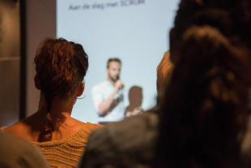
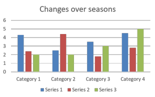

Speaking for EAP

This guide will not attempt to repeat the content of guides to
speaking skills in general (for which there are links at the end)
but will focus on the settings and purposes of speaking in an
academic environment, i.e., for learners of English studying in an
English-medium institution.
A further omission from this guide is the kind of speaking skills
that learners will need when interacting with their peers informally
as those do not differ from generalised speaking skills covered
elsewhere on ELT Concourse.
 |
Three settings |
Essentially, there are three settings in which our learners will need to speak:
- In lectures
- In small-group seminars
- When giving and attending presentations
What the learner will have to do with the language in these settings will vary but there are commonalities, as we shall see.
Purposes and functions |
It is possible to divide speaking skills for EAP into those
skills most obviously needed in the three settings identified above.
That is not the approach taken here.
Here we shall consider the purposes learners have when speaking, and
therefore the functions they will need to be able to perform in all
these settings. Where necessary, we shall consider which
settings are most likely to call on which purposes but that is not
the fundamental organising criterion.
 |
Asking questions |
What follows here applies to lectures, seminars, presentations by peers and even one-to-one tutorials.
Forming the question grammatically is not usually the issue. The issues are:
- Recognising when and if questioning is invited
- Sending a signal that one wishes to pose or interpose a question
- Phrasing the question appropriately, not just structurally accurately
These need explicit treatment on an EAP course.
 |
Recognising the signals |
Speakers have a number of ways of signalling that questions or
interruptions are welcome.
Cultures vary in how it is done (or even if it is done) and within
cultures, individuals will vary in the signals they send so there
are few fixed rules.
Setting, too, will have a significant effect. In EAP settings,
there is frequently a rather formal set of signals for people to
notice and tutors and lecturers often take on the role of a chair of
a meeting. This means they will use strategies for inviting
questions such as
- Ways of including quieter participants and demanding participation: e.g., Fred. Do you have a question?
- Ways of silencing the over-enthusiastic questioner: e.g., Thanks, Jane. Let's get some other questions now, huh?
- Ways of signalling transitions: e.g., Right. Before we go on to the reasons for all this, does anyone have a question?
- Ways of keeping the questions on track: e.g., We are getting off the topic. Let's go back a bit.
- Ways of moving things on and requiring a current questioner to give up the turn: e.g., Right, let's move on.
- Ways of closing a topic: e.g., Does anyone have anything to ask before we move on?
Lecturers and tutors in group seminars or teaching roles usually assume control not only over who speaks next but what they say. This is done in three ways:
- Selection and constraint
- In small-groups, i.e., around twenty or fewer, tutors may select the next person to take a turn, either
by naming them or by alluding to them in some way. For
example:
What is the question we should be asking, John?
Well, we have two people here who have been reading the text. Does either of you have a question?
What do those who will actually do the work want to know?
etc.
Tutors may signal who is to respond to something said by using gaze, focusing on whoever is required to contribute. Being alert to what shifting gaze means is a cultural issue in part but can be taught.
In this case, the learner needs to recognise two important points: not only that it is his or her turn to ask a question or make a point but also that the topic of the question has been constrained by what the tutor is currently talking about. Off-topic questions are not usually welcome. - Constraint
- In lecture settings, a speaker may not have the luxury of
selecting questioners because participant names are unknown or
because the audience is simply too large.
In this case the speaker needs to rely on constraint alone but the constraint is often signalled explicitly, by the parts underlined in the following examples:
Does anyone have a question about these figures?
Bearing this in mind, does anyone have a question?
Does anyone need to ask anything about the results so far before we go on?
Failure to notice question-topic constraint is quite serious because it irritates the tutor / lecturer as well as other participants. - Open-ended invitation
- A tutor may do neither of the above and simply signal the
fact that a question from anyone on any topic is welcome.
This may occur at the end of teaching phases by the tutor
falling silent or signalling open endedness by, for example:
Is there anything at all anyone wants to ask?
Any questions about anything?
etc.
Recognising the lack of topic constraint may be as important as recognising its existence.
These three turn passing mechanisms come in order of precedence. Selection of questioner overrides constraint by topic and selection plus constraint is the most powerful strategy.
 |
Sending the signals |
Lecturers and tutors need to know when someone needs to ask a
question (although they are not universally good at doing so).
Four of the ways learners can signal that they want to ask
something, providing the speaker has signalled that questions are
welcome, are:
- taking a sharp intake of breath (small groups only)
- leaning forward (small groups or front-row occupiers of lecture theatre groups)
- raising a finger (small groups)
- raising a hand (larger groups)
Again, this is a culturally determined issue. In most
English-speaking societies, power distances are low and the posing
of a question carries little threat to the speaker. In fact,
questions are often welcomed and in some contexts, even planted.
In other cultures, questioning implies that the speaker has been
unclear or what has been said is incomplete. In that
circumstance, asking a question threatens the speaker's face and
needs to be done with great care.
Forming the question |
- People like to know what they are about to be asked.
- Questions such as:
What the significance?
Why is it important?
etc.
are unwelcome because the questioner has not signalled the topic carefully enough. - Questions framed in these ways are more welcome:
My question concerns the first set of data and I'd like to know ...
What do you believe the significance of the second kind of response is?
etc.
are more welcome because the speaker knows instantly what the topic is and can spot off-topic questions and act accordingly.
- Questions such as:
- Even lecturers like a complement. Questions preceded
with, e.g.:
I think that's really interesting. What ...?
That's very helpful. How much ...?
etc.
are usually more welcome than just jumping in. - It is easier to ask for forgiveness than permission.
Off-topic questions may be tolerated if they are properly framed. For example:
I realise this is a bit off topic but may I ask ...?
This might not be relevant but do you know ...?
etc.
may be allowable. - Most interactions between educators and students in
English-speaking cultures may be described semi-formal so the
question needs to be properly phrased.
- So, for example:
What's the importance of ...
Why ...?
etc. - Are less appropriate than, for example:
Can ask whether ...?
Could you tell us if ...
Would you say that ...?
etc.
- So, for example:
- Learners need to know that, especially, but not exclusively,
in small-group settings, the questioner needs to acknowledge
whatever response has been given so something like:
Thanks. That's clearer now.
Ah, I see. Thank you.
is appropriate.
All of this is eminently teachable and learnable.
 |
What type of question am I asking? |
Questions are not confined to the elicitation of information. For EAP learners in particular, other question types can be more important because language issues may obstruct comprehension. Different types of questions and their formulations need to be taught. There are three main sorts
- Checking one's own comprehension.
Questions such as:
Am I right in thinking ...?
Would I be wrong if I assumed ...?
Should I assume that ...
etc.
are all ways to check that one has understood accurately. - Requesting repetition or reformulation.
- Questions such as:
Could you go over that point again?
Could you explain again what ...?
Could you say that again?
etc.
ask for repetition and are requests, not questions. - Questions such as:
Could you put that another way?
Is there another way you could explain this?
Is that the same as saying ...?
etc.
ask for reformulation and are requests not questions.
- Questions such as:
- Challenging.
Questions such as:
Is that always the case?
Are we to believe that ...?
How reliable are the data?
What evidence do we have that ...?
etc.
are all ways of challenging the speaker to justify comments made.
They should be handled with care, even in low-power-distance settings such as listening to a peer's presentation.
Presenting |
Sooner or later in most educational settings, students are
expected to present data to their tutors and colleagues. This
is, for the EAP learner, pretty scary.
There are ways to prepare learners for this kind of event whatever
subject matter they are having to present. Usually,
presentations are of two types:
- Formal presentations to groups of peers (and the tutor(s)) in which the speaker takes a central position and is backed up by data, audio-visual aids and so on.
- Less formal situations in which the learner is expected to present a prepared answer to colleagues and the tutor in a seminar setting.
Considerations are the same for both types of presentation.
 |
Genre |
Presentations will usually fall into one of these categories and their
staging will be predictable and conventional. Straying from
conventional staging will confuse and bewilder listeners.
Longer and more complex presentations may embed, for example,
discussion of controversies within an information report, but the
general outlines of each type will be unaffected.
It is important to recognise that the conventional staging set out
here concerns life in an English-speaking environment.
Conventional staging of generic categories is culturally variable so
this has to be taught, not assumed.
- Recount
- A recount is intended to set out clearly what has happened.
It is the format for reporting back on experiments conducted,
surveys carried out and work done.
It works like this:- Orientation (what was done):
For example:
This survey was carried out to discover how the populations of seals in the sea off Malta has varied over the year. - Records of events (in chronological order):
For example:
The first measures were taken on [date] and further counts were made at monthly intervals until ... - Reorientation (a summary referring to what was done):
For example:
From the data we gathered, it is possible to see how the population has varied over the year. The data are ... - Coda (evaluation of results):
For example:
We feel that this data should be used by government in order to ...
Further studies will be needed to know if ...
- Orientation (what was done):
- Procedure
- A procedure text (spoken or written) is intended to explain
how something is done.
It works like this:- Goal (what the procedure is intended to achieve):
For example:
This presentation focuses on how meteorological measurements are taken and recorded. - Materials (what is required):
For example:
We need normally to have a pluviometer to record rainfall, a minimum-maximum thermometer to record temperatures, ... - Steps (in a logical sequence):
For example:
Setting up the equipment is done as follows ...
Measurements are taken by ...
Records are kept in the form of ...
- Goal (what the procedure is intended to achieve):
- Information report
- An information report is intended to present data logically
and has a simple structure although the ordering of information
in the second stage needs careful attention.
It works like this:- General statement (identification of the subject):
For example:
Internet-enhanced learning may be defined as ... - Description (these data need to be logically categorised):
For example:
Most internet-enhanced learning programmes have three elements. The first is the transmission of data, the second is the ability to submit online assignments and the third is the ability to interact with teachers and other students. I'll take these in turn ...
Then the presentation will follow the pattern set out here by the speaker. Straying from it will confuse and irritate the audience. - Evaluation and suggestion (this is optional)
For example:
From these data, it seems logical to use a full enhanced learning programme with these learners.
- General statement (identification of the subject):
- Discussion
- A discussion is intended to present both sides of a
controversy and is more common in the humanities than the
sciences.
It has two possible structures because stages two and three may be combined with the arguments for and against presented in pairs. It works like this:- Issue (what I am discussing):
For example:
Whether health care should remain free at the point of need is not a new controversy but ... - Arguments for (each point requires some
exemplification):
For example:
A free healthcare service has four distinct advantages for society:
Firstly, it provides ... . For example, ...
This section and the next may also include some consideration of causes and effects. There is a separate guide on this site concerning the ways English does this linked in the list of related guides at the end. - Arguments against (exemplified):
For example:
There are also four major drawbacks:
Firstly, the expense ... . For example, a single cataract operation costs ... - Coda (this is an optional stage)
For example:
On the whole, I feel that ...
- Issue (what I am discussing):
There is a fifth category which may be considered:
exposition.
This is rarer because the speaker is presenting a one-sided
argument, not discussing an issue objectively. The staging is
similar to that of a discussion text except that the thesis to be
argued comes at the beginning and one set of arguments, either those
for or against, is excluded. The final coda is replaced by a
statement reinforcing the speaker's thesis and is usually not
optional.
 |
Preparing |
To help learners to stage presentations effectively, the
following outlines my be useful for them to keep beside them as they
work.
Obviously, before one can even begin, one needs to know what genre
one is using.

Commonalities |
There are some commonalities to consider when teaching this type of structuring and practising the skill of presenting.
- All presentations begin with a statement of the topic: orientation, goal, identification of topic or issue to be discussed.
- Logical staging is essential to maintain coherence: switching stages around or mixing them up will result in incoherence.
- Most presentations will end with a summary and/or some kind of coda to signal the end.
- Most presentations will allow time for and invite questions from the audience.
- Many presentations will be followed by a general discussion in which turn-taking skills will be at a premium. See the link below for a guide to more on that.
 |
Pressures |
There are a number of pressures on anyone speaking in public. In the classroom, we can reduce them somewhat.
- Preparation level
Off-the-cuff presentations are not for most people. Learners operating in a foreign language are even less able to present impromptu and it isn't fair to ask them to do so.
It is important, therefore to build in preparation time to any teaching programme aimed at presentation techniques.
Being well prepared and knowing that you are, reduces the pressure considerably. - Topic familiarity
Trying simultaneously to research a new topic and prepare a presentation on it is an unnecessary pressure in the classroom so care should be taken, especially at the beginning, to allow the learner to decide on the topic. That way, they can focus on the presentation not the data because the latter are well known to them. - Audience size
Pressure increases in direct ratio to audience size so one way to reduce the pressure is to get people to practise their presentations in small groups of three or four before they have to take the step up to presenting to the whole group. Repeating a presentation may seem somewhat dull to us but it is not seen that way by learners who appreciate the opportunity to repeat a presentation more than once. - Using visual aids
Visual aids can be extremely helpful or just an irritation depending on how well they are designed. There are two issues:- They act as an irritation when they are used instead of explanation and description; they are helpful when they are used to supplement explanation and description to present data which cannot (or should not) simply be read out. We have probably all attended a presentation in which the speaker projects a slogan and then reads it to us. That's a waste of everyone's time.
- They have a further useful function when used well and that is to replace the speaker's notes. If, for example, slides are projected which refer to key data and ideas, they will serve to remind the speaker of what should be emphasised. If they are used indiscriminately, they simply overwhelm the audience with detail and people lose the thread. A rough rule of thumb is not to use more than one slide per five minutes of the presentation.
- Language unfamiliarity
- The first area of language which needs to be tackled
before most people can even begin a presentation is that of
verbalising graphical data.
Practising the skill of looking at, say, a graph such as:

and being able to say something like
As can be seen, Series 3 remained around 2.0 for the first two Categories but increased by 50% in the third Category and had more than doubled by Category 4.
is valuable practice for anyone aiming to be able to present data verbally. We need to do more than show the data, we need to be able to explain them. - Secondly, learners need to master a range of
prefabricated language to increase their fluency.
Examples are:
- To gather one's thoughts when questioned:
Well, let me see
Thank you for the question. It's an important one
Hmm, that's an interesting question
Well, now, what I can say is ... - To present a personal opinion (a coda, usually):
as far as I'm concerned
to my mind
in my view
as far as I can see
it seems to me that - To orientate the audience:
Now we can move on to the second issue
To summarise ...
The essential point is ...
Finally, ...
Another way of saying this is ...
An example of what I mean is ... - To invite questions:
I am happy to try to answer any questions you may have
Does anyone have a question they'd like to ask? - To deal with interruption:
I'll come to that at the end, if I may
I'll take that point later.
That's an interesting point but we don't have time for a full discussion now.
- To gather one's thoughts when questioned:
- The first area of language which needs to be tackled
before most people can even begin a presentation is that of
verbalising graphical data.
 |
Visualising a presentation |
A useful technique for EAP learners asked to give a presentation is to get them to visualise it before they deliver it. It has advantages:
- It makes them less reliant on their notes, helping them to be more mobile and maintain eye contact with the audience
- It increases their confidence because they will feel better prepared
- It lets them see where they may need more content (or fewer PowerPoint slides)
- It allows them to predict what people may ask and prepare some kind of answer
It works like this:
Step 1: learn the presentation
Learners should sit with their plan for the presentation and make sure they can, without looking at it, recite the essential stages of the talk. Depending on the genre (see above), this will require four or five stages to be recited.
Step 2: run through the stages
This is where the use of visual aids such as projected slides is most helpful. As was noted above, slides and other graphics can replace the speaker's notes altogether if they are confined to the key ideas in the talk.
Once the staging is clear and memorised, learners need to focus on
- what they will say at the beginning of the presentation
- what they will say when displaying any data graphically (see above under language familiarity)
- what they will say at the beginning of each stage
- how they will signal transitions between stages
- how they will signal the end and invite questions and comments
Step 3: reduce the notes
Learners can now re-visit their notes and reduce them to key words on cards. If this procedure has been followed to the end, they may not need the cards, but most people like some reassurance.
Step 4: visualise the whole presentation
The learners should now find somewhere comfortable to sit or lie and, with their eyes closed, visualise the whole presentation from start to finish. In particular focusing on getting the order and staging right and going over in their minds the short language chunks they need to memorise to help them speak fluently
Step 5: questions
The final stage, before repeating Step 4 as often as necessary, is to try to imagine what questions people are likely to ask and how they will field them.
 |
Delivering the presentation |
There are a few logistical matters to attend to, not least:
- Setting up the room appropriately so the presenter is comfortable with the arrangement.
- Making sure the equipment is functioning as it should and knowing what to do if it doesn't.
- Making sure everyone shows respect by turning up on time and being quiet and attentive. It'll be their turn soon.
- Allowing for overrunning. Novice presenters, in any language, are often poor at knowing how long something will take. It's disturbing and can even be distressing to be hurried along or cut short.
- Having a question or two in mind yourself to get the ball rolling at the end of the presentation.
- Making sure the topic of the presentation is known to everyone in the group. This simulates what will happen when they attend lectures or lessons for real.
- During and before any student-led presentation, we should not forego the opportunity for the other learners to practise their note-making skills and their questioning strategies. See the separate guide for the former and above for the latter.
 |
Other speaking skills |
That is obviously not the end of the range of speaking skills that learners will need when attending an English-speaking educational institution. However, most other speaking skills do not lie specifically in the realm of English for Academic Purposes. They include:
- Cooperating in peer groups to get tasks done
- starting tasks
- planning
- setting aims
- agreeing
- suggesting
- negotiating
- objecting
- encouraging
- volunteering
- Interacting with authorities
- getting permission
- getting help
- explaining
- getting information
- complaining
- arranging
- apologising
- Socialising
- Living in an English-speaking society
and all these skills will form just as much a part of a General English programme as they will form part of an EAP course.
| Related guides | |
| turn-taking | the general guide to the area which applies particularly to EAP |
| expressing cause and effect | a separate guide to the functional area |
| speaking | the more general guide to the skill |
| teaching speaking | for some classroom ideas |
| visualisation | as a teaching technique |
| listening and note-making | for a guide to what people should be doing during a presentation or lecture |
| EAP index | for links to other guides in this area |